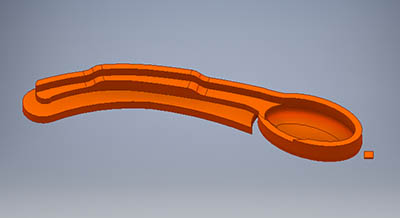
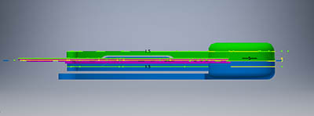
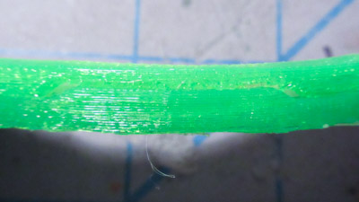

Maple Seed Pod
Problem
My final project (RDAS v0.2), used a lot of screws and I wanted to explore a different way these could be eliminated by having a captive flexible piece within a rigid piece.
For this experiment, the rigid material used was PLA. Flexible material was TPE, aka NinjaFlex.
Here were some of the requirements:
- Has to be easily replicable
- Single extruder / multiple prints
- Standard fdm 3d printer
- The pieces have to build on each other (not let the nozzle ram in to an existing piece)
- As little confusing as possible
- Bond between both rigid pieces has to be strong
- Captive flexible piece cannot escape / be pulled out
Before coming up with the requirements, I was considering various extruders that could switch the filament. Or using dual extruders.
Was also looking in to modifying the gcode to eliminate the top layers on the first piece, and the bottom layers on the second piece.
Acer Pseudoplatanus Samara
When thinking about what to create as a test print for this, did not want to create just cubes. A maple seed pod would be a good test. Where its wing is more thin, can use flexible material for this. Where the pod is thick- around the seed and the edge of the wing, can use rigid material.
Something neat about maple seed pods is that they spin helically as they fall. Plus with their light weight, they can travel quite far in the wind.
Photo: Free flight sequence of an autorotating seed by David Lentink [link]
How does this work? A leading edge vortex is created as the seed is falling, creating more lift. It happens that other birds and insects use a similar mechanism too. References: [link] [link] [link]. This video shows it in action.
I was also wondering if maybe a modification of these could be used instead / in addition to a parachute for the aeroshell. It probably wouldn't work out to be better than a parachute though.
Here are the goals of this experiment:
- Determine the adjustment dimensions for capturing a fleible 3d print within a rigid one
- Determine the offset dimension for stacking two rigid 3d prints on top of eachother
- See how well PLA can be printed on top of NinjaFlex
- See how strong a captive flexible print is
- See how strong (or not strong) clamping a flexible print is between two rigid prints
- Copy the maple seed pod and see if it can also descend helically
The test was designed to be small yet interesting, so if it was a failure it wouldn't matter much but still something interesting would have been made.
Design
Started out with some real maple seed pods. Take a photo against 5mm grid paper, sketch the outlines in Inkscape and save as dxf
Imported the outlines into Autodesk Inventor, retraced one of them to be used for the design
These are the dimensions for the space between the captive print and rigid print. The wall of the rigid is 1.5mm. Space between the flexible and wall is sp*2, and sp = 0.4mm. The space between the flexible outer edge and what would be cut away from the rigid was just sp
The first portion that was cut away from the rigid would be where the edge of the wing would be. Its dimensions are layer*6, so the cutaway added sp_z to it. sp_z = 0.15mm, which is 1/2 of the layer height at 0.3mm
The other cut away was for the thinner part of the wing. Same as above, but it is only layer*2. Added the extra sp_z offset
Here is what the outer pod looks like - there is also the addition of a ridge that the wing will also fit into, and the second print will create a "clamp" over it
As is, the ridge would be floating in air so added a base to it. There's a space where generated supports would be:
This is what the inner pod looks like. There is a second print that is the other half of the seed that will be glued on to it:
Assembly from upper corner:
Assembly from side:
Here are the dimensions:
Fabricating
The printer I used was a Makerbot Replicator 1 single extruder.
NinjaFlex settings:
- Layer height: 0.3mm
- Infill: 15%
- Shells: 0
- Feedrate: 30mm/s
- Travel rate: 30mm/s
- Build platform temperature: 60 deg C
- Extruder temperature: 230 deg C
PLA settings:
- Layer height: 0.3mm
- Infill: 15%
- Shells: 0
- Feedrate: 80mm/s
- Travel rate: 120mm/s
- Build platform temperature: 50 deg C
- Extruder temperature: 230 deg C
Other half of the seed print was attached with cyanoacrylate
The first rigid print is done
Placing the flexible print into it
It fits nicely into the cut out areas
The second print is printed on top of it
This is what the clamped portion looks like

The bottom of the first piece, with the base still attached
Test #1 result
The clamp idea did not work well on this test
You can see here that the wing is not moving in to the grooves of the shape
As well as on the other side too
The edge of the captured area
Can't tell where the first print ends and the second begins
Comparison to actual maple seed pod. (Ours is 2x scale)
The captured portion is held in well, was un able to pull it out
The clamped portion was easily sepparated from the rigid pieces
Test #2- the wing was supported onto the ridge, to see if the second print would better adhere to it
Could not make the wing flush with the ridge, always kept buckling like this
The result was that it also did not meet the shape profile
Test #3- the wing was hot glued onto the ridge

It is stuck to the ridge, and in some areas the PLA is not touching anything
The result of this one. Can you see the difference of how the wing is attached to the upper portion?
Angle of the wing. It worked out well since it was glued to the ridge. Really neat to see how well the shape of the wing is transformed!
Here you can see some of the empty space
All of the maple seed pods and some real ones too!
Evaluation
This is the 3d printed seed pod falling
The adjustment dimensions worked great. I was really surprised at how well sp_z (0.15mm) did for the vertical space between the rigid and flex print. Also surprised at the combination of the two rigid prints.
It turned out that PLA can somewhat be printed on NinjaFlex, but it really helps to have the flexible piece adhered to it in some way (like with hot glue). Just clamping the piece did not really work. Though, in this design not all of the sides were clamped down. It could be pulled out from almost every direction.
The captive portion of the pieces worked great. It cannot escape no matter how hard I pulled at it. This will be useful for the link pieces in RDAS.
Does it work? Not really. It depends on the angle of attack- and it can somewhat spin a bit. The piece is 2x as big and quite a bit heavier than the real maple seed pod. With some modifications such as improving the seed area to be better designed, and making the wing a little less floppy, it's possible that maybe it might work.
The experiment was great to find these values that I need. Now I can design a smaller net of a cube and see if it can fold up properly! Then on to v0.3 of RDAS.
Files
The files are available on Github.